What This Guide PromisesAno ang Pangako ng Gabay na ItoUnsa ang Gisaad sa Giya nga KiniNanu ing Pangako ning Gabay a Iti
Every nephrology consult ends with "watch your diet." Very few patients leave that appointment knowing what to watch, by how much, and why it changes as kidney function declines. This guide answers those questions directly — in Filipino terms, using foods you actually eat.Ang bawat konsultasyon sa nephrology ay nagtatapos sa "bantayan ang iyong diyeta." Napakakaunting pasyente ang umalis sa appointment na iyon na alam ang dapat bantayan, kung magkano, at kung bakit nagbabago ito habang humihina ang function ng bato. Sinasagot ng gabay na ito ang mga tanong na iyon nang direkta — sa mga Filipino na termino, gamit ang pagkaing talaga mong kinakain.Ang matag konsultasyon sa nephrology magtapos sa "bantayan ang imong diyeta." Gamay ra kaayo ang mga pasyente nga makagawas sa appointment nga nahibalo kung unsa ang bantayan, kung pila, ug kung nganong magbag-o kini samtang nahulog ang function sa bato. Gisulbad sa giya nga kini ang mga pangutana nga direkto — sa Filipino nga mga termino, gamit ang pagkaon nga tinuod mong gikaon.Ing bawat konsultasyon sa nephrology natapos king "bantayan ing diyeta mu." Kapiranun la ing mga pasyente a umalis king appointment a alam ing dapat bantayan, kung magkanu, at kung bakit nagbabago iti habang humihina ing function ning bato. Sinasagut ning gabay a iti ing mga tanong a ita nang direkta — king mga Filipino a termino, gamitten ing pagkain a talaga mong kinakain.
You were told you have Chronic Kidney Disease (CKD). Maybe Stage 3, maybe Stage 4. Your doctor mentioned diet. Perhaps the hospital dietitian gave you a leaflet. But you still don't know: Can you eat rice? Is bangus okay? What about kamote, gabi, or bagoong?Sinabihan kang mayroon kang Chronic Kidney Disease (CKD). Baka Stage 3, baka Stage 4. Binanggit ng iyong doktor ang diyeta. Baka binigyan ka ng hospital dietitian ng isang leaflet. Ngunit hindi mo pa rin alam: Maaari ka bang kumain ng kanin? Okay ba ang bangus? Paano ang kamote, gabi, o bagoong?Gisultihan ka nga adunay Chronic Kidney Disease (CKD). Basin Stage 3, basin Stage 4. Gisambit sa imong doktor ang diyeta. Basin gihatagan ka sa hospital dietitian og pamflet. Apan wala ka pa gihapon nahibalo: Makakakain ba ko og kanin? Okay ba ang bangus? Unsa ang kamote, gabi, o bagoong?Sinabihan kang mayroon kang Chronic Kidney Disease (CKD). Malyari Stage 3, malyari Stage 4. Binanggit ning doktor mu ing diyeta. Malyaring binigyan ka ning hospital dietitian ning isang leaflet. Ngem e mu pa rin alam: Malyari ka bang kumain ning kanin? Okay ba ing bangus? Panung ing kamote, gabi, o bagoong?
CKD nutrition has four pillars: protein, phosphorus, potassium, and sodium. Each has a target. Each has a list of Filipino foods that help or hurt. This guide covers all four — honestly, with numbers, and with enough Filipino food context to actually change how you eat.Ang nutrisyon sa CKD ay may apat na haligi: protina, phosphorus, potassium, at sodium. Ang bawat isa ay may target. Ang bawat isa ay may listahan ng mga pagkaing Filipino na nakatutulong o nakakasama. Sinasaklaw ng gabay na ito ang lahat ng apat — nang may katapatan, may mga numero, at may sapat na konteksto ng pagkaing Filipino para tunay na mapalitan ang iyong paraan ng pagkain.Ang nutrisyon sa CKD adunay upat ka haligi: protina, phosphorus, potassium, ug sodium. Ang matag usa adunay target. Ang matag usa adunay listahan sa mga Filipino nga pagkaon nga nakatulong o makadaut. Gilihokan sa giya nga kini ang tanan nga upat — sa kamatuuran, uban ang mga numero, ug uban ang igo nga konteksto sa Filipino nga pagkaon aron tinuod nga mabag-o kung giunsa ang imong pagkaon.Ing nutrisyon king CKD apat a haligi: protina, phosphorus, potassium, at sodium. Ang bawat isa mayroon target. Ang bawat isa mayroon listahan ning mga pagkaing Filipino a nakatutulong o nakakasama. Sinasaklaw ning gabay a iti ing amin a apat — nang may katapatan, may mga numero, at may sapat a konteksto ning pagkaing Filipino para tunay a mapalitan ing paraan ning pagkain mu.
One critical warning upfrontIsang mahalagang babala sa simulaUsa ka kritikal nga pahimangno sa sinugdananMetung a kritikal a babala sa simula
When you start dialysis, your nutrition targets reverse dramatically. Everything you learn here about eating less protein becomes "eat more protein." Make sure you read the Transition section before you assume this guide applies after dialysis starts.Kapag nagsimula ka ng dialysis, ang iyong mga target sa nutrisyon ay dramatikong nagbabago. Ang lahat ng matututo mo dito tungkol sa pagkain ng mas kaunting protina ay magiging "kumain ng mas maraming protina." Tiyakin na mabasa mo ang seksyon ng Transition bago mo ipagpalagay na naaangkop ang gabay na ito pagkatapos magsimula ng dialysis.Kon magsugod ka og dialysis, ang imong mga target sa nutrisyon dramatikong magbabag-o. Ang tanan nga makat-on mo dinhi bahin sa pagkaon og menos nga protina mahimong "kumain og daghan pang protina." Siguroha nga mabasa nimo ang seksyon sa Transition una nimong ipagpaanggap nga magamit kini nga giya human magsugod ang dialysis.Nung magsimula kang dialysis, ing mga target mu sa nutrisyon ay dramatikong nagbabago. Ing amin a matututo mu diti tungkol king pagkain ning mas kaunting protina magiging "kumain ning mas merakung protina." Siguraduhin a mabasa mu ing seksyon ning Transition bago mu ipagpalagay a naaangkop ing gabay a iti pagkatapos magsimula ing dialysis.
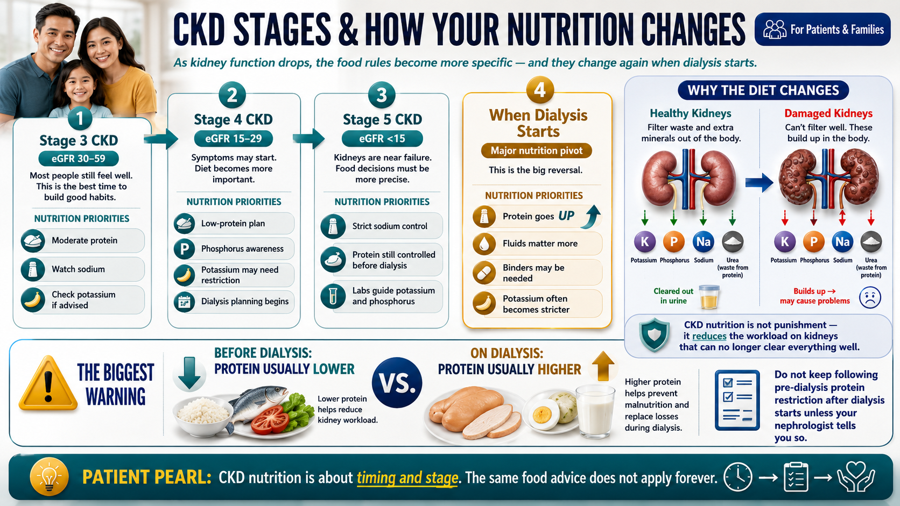
Why Your Kidneys Are Picky EatersBakit Mapili ang Iyong mga Bato Pagdating sa PagkainNganong Pihikara ang Imong mga Bato sa PagkaonBakit Mapili ing Bato Mu king Pagkain
Healthy kidneys filter about 180 liters of blood per day. They decide what to keep and what to throw out — balancing potassium, phosphorus, sodium, and the byproducts of protein digestion. When kidney function drops to 45% (Stage 3) or 15% (Stage 5), that filter becomes slow and partial.Ang malusog na mga bato ay nagsasala ng mga 180 litro ng dugo bawat araw. Nagpapasya ang mga ito kung ano ang itago at kung ano ang itapon — pinananatiling balanse ang potassium, phosphorus, sodium, at ang mga byproduct ng pagtunaw ng protina. Kapag bumagsak ang function ng bato sa 45% (Stage 3) o 15% (Stage 5), ang filter na iyon ay nagiging mabagal at hindi kumpleto.Ang maayong mga bato nagsala og mga 180 litros nga dugo kada adlaw. Nagdesisyon sila kung unsa ang tipigan ug kung unsa ang itapon — nagbalanse sa potassium, phosphorus, sodium, ug ang mga byproduct sa pagtunaw sa protina. Kon mahulog ang function sa bato sa 45% (Stage 3) o 15% (Stage 5), ang filter na mabagal ug dili kompleto.Ing malusog a mga bato nagsasala ning mga 180 litro ning dugu bawat aldo. Nagpapasya iti kung nanu ing itago at kung nanu ing itapon — nagbabalanse ning potassium, phosphorus, sodium, at ing mga byproduct ning pagtunaw ning protina. Nung bumagsak ing function ning bato sa 45% (Stage 3) o 15% (Stage 5), ing filter a ita nagiging mabagal at hindi kumpleto.
What doesn't get filtered builds up in the blood. Potassium rises — which can cause dangerous heart rhythms. Phosphorus rises — which pulls calcium from your bones and hardens your blood vessels. Urea rises — the waste product of protein digestion that makes you feel nauseated and foggy.Ang hindi nasasala ay nag-iipon sa dugo. Tumataas ang potassium — na maaaring magdulot ng mapanganib na ritmo ng puso. Tumataas ang phosphorus — na humahatak ng calcium mula sa iyong mga buto at nagpapatibay ng iyong mga ugat ng dugo. Tumataas ang urea — ang basura ng pagtunaw ng protina na nagpapakramdim sa iyo ng pagduduwal at kalituhan.Ang wala masala nagtipon sa dugo. Motubo ang potassium — nga mahimong magdala sa delikadong ritmo sa puso. Motubo ang phosphorus — nga nagkuha sa calcium gikan sa imong mga bukog ug nagpalig-on sa imong mga ugat sa dugo. Motubo ang urea — ang basura sa pagtunaw sa protina nga nagparamdam kanimo sa pagkasuya ug kalibog.Ing e nasasala nag-iipon king dugu. Tumatangis ing potassium — a malyaring magdulot ning mapanganib a ritmo ning puso. Tumatangis ing phosphorus — a humahatak ning calcium bunga ning mga buto mu at nagpapatibay ning mga ugat ning dugu mu. Tumatangis ing urea — ing basura ning pagtunaw ning protina a nagpapakramdam keka ning pagduduwal at pagkalito.
This is why your diet changes. You are not being punished. You are reducing the workload on a kidney that can no longer do everything it used to. Every smart dietary choice extends the time before dialysis becomes necessary and protects your heart, bones, and blood vessels in the meantime.Ito ang dahilan kung bakit nagbabago ang iyong diyeta. Hindi ka pinaparusahan. Binabawasan mo ang trabaho ng isang bato na hindi na magagawa ang lahat ng dati nitong nagagawa. Ang bawat matalinong pagpili sa pagkain ay nagpapalawak ng oras bago maging kinakailangan ang dialysis at nagpoprotekta sa iyong puso, mga buto, at mga ugat ng dugo sa pagitan.Mao kini ang hinungdan ngano magbag-o ang imong diyeta. Dili ka gisilutan. Nagpakunhod ka sa trabaho sa usa ka bato nga dili na mabuhat ang tanan nga dati niyang mahimo. Ang matag maalamong pagpili sa pagkaon nagpalapas sa oras una mahimong gikinahanglan ang dialysis ug nagpanalipod sa imong puso, mga bukog, ug mga ugat sa dugo sa haon.Iti ing dahilan kung bakit nagbabago ing diyeta mu. E ka pineparusahan. Binabawasan mu ing trabaho ning metung a bato a e na makapag-trabaho ning amin a dati nitong nagagawa. Ang bawat matalinong pagpili sa pagkain nagpapalawak ning panahon bago maging kailangan ing dialysis at nagpoprotekta king puso mu, mga buto, at mga ugat ning dugu sa panahon na iyon.
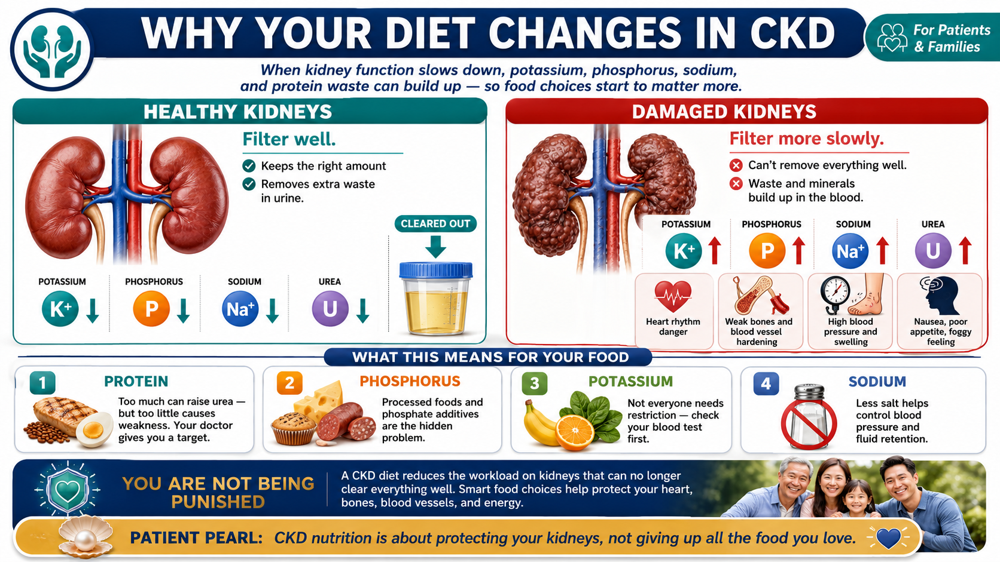
CKD Stage 3 (GFR 30–59)
Kidneys working at 30–59% capacity. Most patients feel well. Diet changes begin here — this is the best time to establish habits.Mga bato na gumagana sa 30–59% ng kapasidad. Karamihan sa mga pasyente ay nakakaramdam na mabuti. Nagsisimula dito ang mga pagbabago sa diyeta — ito ang pinakamainam na oras upang maitatag ang mga ugali.Mga bato nga nagtrabaho sa 30–59% nga kapasidad. Kadaghanan sa mga pasyente nakaramdam og maayo. Nagsugod dinhi ang mga pagbag-o sa diyeta — kini ang pinakamaayo nga panahon aron maestablisar ang mga batasan.Mga bato a gumagana sa 30–59% ning kapasidad. Karamihan king mga pasyente maramdam nang maayos. Nagsisimula diti ing mga pagbabago sa diyeta — iti ing pinakamainam a panahon para maitatatag ing mga ugali.
CKD Stage 4 (GFR 15–29)
Kidneys at 15–29% capacity. Symptoms may appear. Low-protein diet with possible ketoanalogue supplements. Dialysis planning begins.Mga bato sa 15–29% ng kapasidad. Maaaring lumabas ang mga sintomas. Diyeta na mababa ang protina na may posibleng mga ketoanalogue supplements. Nagsisimula ang pagpaplano ng dialysis.Mga bato sa 15–29% nga kapasidad. Mahimong moabot ang mga sintomas. Diyeta nga ubos sa protina nga adunay posible nga mga ketoanalogue supplements. Nagsugod ang pagplano sa dialysis.Mga bato sa 15–29% ning kapasidad. Malyaring lumabas ing mga simtomas. Diyeta a mababa ing protina ampo posibleng mga ketoanalogue supplements. Nagsisimula ing pagpaplano ning dialysis.
CKD Stage 5 (GFR <15)
Near-complete kidney failure. Dialysis either starting or imminent. Nutrition targets shift significantly — see the Transition section.Halos kumpletong pagpalya ng bato. Nagsisimula na o nalalapit na ang dialysis. Ang mga target sa nutrisyon ay malaki ang pagbabago — tingnan ang seksyon ng Transition.Hapit kumpletong pagkapalyas sa bato. Nagsugod na o hapit na ang dialysis. Ang mga target sa nutrisyon nagsugod og dakong pagbag-o — tan-awa ang seksyon sa Transition.Halos kumpletong pagpalya ning bato. Nagsisimula na o malapit na ing dialysis. Ang mga target sa nutrisyon malaki ing pagbabago — tingnan ing seksyon ning Transition.
The Four Numbers You Must KnowAng Apat na Numero na Dapat Mong MalamanAng Upat ka Numero nga Kinahanglang MahibaloIng Apat a Numero a Dapat Mung Maalaman
Every CKD diet comes down to four nutrients. Your nephrologist may have mentioned all four, or just one or two. Here is what each means for someone eating Filipino food.Ang bawat diyeta sa CKD ay napupunta sa apat na sustansya. Ang iyong nephrologist ay maaaring nabanggit ang lahat ng apat, o isa o dalawa lamang. Narito ang kahulugan ng bawat isa para sa isang taong kumakain ng pagkaing Filipino.Ang matag diyeta sa CKD nagkahulogang upat ka sustansya. Ang imong nephrologist mahimong gihisgutan ang tanan nga upat, o usa o duha ra. Ania ang kahulugan sa matag usa para sa usa ka tawo nga nagkaon og Filipino nga pagkaon.Ing bawat diyeta sa CKD napupunta sa apat a sustansya. Ing nephrologist mu malyaring binanggit ing amin a apat, o metung o adua la. Naidi ing kahulugan ning bawat isa para king metung a taong kumakain ning pagkaing Filipino.
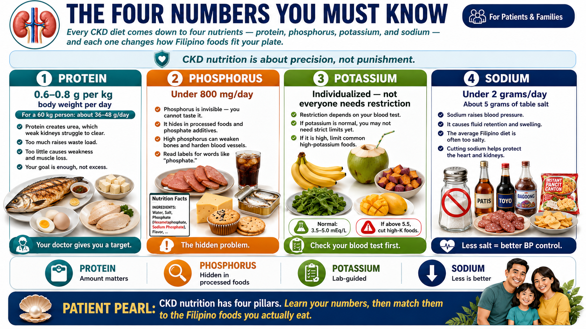
Protein: 0.6–0.8 g per kg body weight per dayProtina: 0.6–0.8 g bawat kg ng timbang ng katawan bawat arawProtina: 0.6–0.8 g kada kg sa timbang sa lawas kada adlawProtina: 0.6–0.8 g bawat kg ning timbang ning katawan bawat aldo
For a 60 kg person: 36–48 grams of protein per day. This is less than the general population recommendation of 0.8–1.0 g/kg. Protein breaks down into urea, which your kidneys struggle to clear. But going too low causes muscle wasting — see the Protein Revelation section.Para sa isang taong 60 kg: 36–48 gramo ng protina bawat araw. Ito ay mas kaunti kaysa sa rekomendasyon ng pangkalahatang populasyon na 0.8–1.0 g/kg. Ang protina ay nasisira sa urea, na nahihirapan i-clear ng inyong mga bato. Ngunit ang sobrang pagkababa ay nagdudulot ng pag-ubos ng kalamnan — tingnan ang seksyon ng Protein Revelation.Para sa usa ka tawong 60 kg: 36–48 grams nga protina kada adlaw. Kini menos kaysa sa rekomendasyon sa tibuok populasyon nga 0.8–1.0 g/kg. Ang protina nahulog sa urea, nga nagalisod i-clear sa imong mga bato. Apan ang sobrang pagkakunhod nagdala sa pagkausik sa kaunuran — tan-awa ang seksyon sa Protein Revelation.Para king metung a taong 60 kg: 36–48 gramo ning protina bawat aldo. Iti mas kaunti kaysa king rekomendasyon ning pangkalahatang populasyon a 0.8–1.0 g/kg. Ing protina nasisira king urea, a nahihirapan i-clear ning bato mu. Ngem ing sobrang pagkababa nagdudulot ning pag-ubos ning kalamnan — tingnan ing seksyon ning Protein Revelation.
Phosphorus: under 800 mg per dayPhosphorus: wala pang 800 mg bawat arawPhosphorus: ubos sa 800 mg kada adlawPhosphorus: mas mababa sa 800 mg bawat aldo
Phosphorus in food is invisible — you cannot taste it. It hides in processed foods, canned goods, fast food (as chemical additives), dairy, beans, and organ meats. High phosphorus breaks down your bones and calcifies your arteries. Read the ingredient list for anything that says "phosphate."Ang phosphorus sa pagkain ay hindi nakikita — hindi mo ito matitikman. Nagtatago ito sa mga processed foods, de-latang pagkain, fast food (bilang mga chemical additives), dairy, beans, at organ meats. Ang mataas na phosphorus ay nagpapalala ng iyong mga buto at nagpapahigas ng iyong mga ugat. Basahin ang listahan ng mga sangkap para sa anumang nagsasabing "phosphate."Ang phosphorus sa pagkaon dili makita — dili nimo matilawan. Nagtago kini sa mga processed foods, de-latang pagkaon, fast food (ingon mga chemical additives), dairy, beans, ug organ meats. Ang taas nga phosphorus nagpalapas sa imong mga bukog ug nagpatig-aton sa imong mga ugat. Basaha ang listahan sa mga sangkap para sa bisan unsa nga nagsulti nga "phosphate."Ing phosphorus sa pagkain e makita — e mu iti matikman. Nagtutago iti king mga processed foods, de-latang pagkain, fast food (bilang mga chemical additives), dairy, beans, at organ meats. Ing matas a phosphorus nagpapalala ning mga buto mu at nagpapahigas ning mga ugat mu. Basahin ing listahan ning mga sangkap para king aniaman a nagsasabing "phosphate."
Potassium: individualized — not everyone needs restrictionPotassium: indibidwal — hindi lahat ay kailangan ng restriksyonPotassium: indibidwal — dili tanan nagkinahanglan og restriksyonPotassium: indibidwal — e amin kailangan ning restriksyon
Unlike phosphorus, not every CKD patient needs to restrict potassium. Your nephrologist checks your blood potassium level. If it's normal (3.5–5.0 mEq/L), you may not need to avoid high-potassium foods yet. If it's elevated (above 5.5), then limit banana, coconut water, kamote, and certain vegetables.Hindi tulad ng phosphorus, hindi lahat ng pasyente na may CKD ay kailangan na i-restrict ang potassium. Tinitingnan ng inyong nephrologist ang antas ng potassium sa inyong dugo. Kung normal ito (3.5–5.0 mEq/L), maaaring hindi pa kailangang iwasan ang mga pagkaing may mataas na potassium. Kung mataas ito (higit sa 5.5), limitahan ang saging, tubig ng buko, kamote, at ilang mga gulay.Dili sama sa phosphorus, dili tanan nga pasyente nga adunay CKD nagkinahanglan og pag-restrict sa potassium. Gisusi sa imong nephrologist ang lebel sa potassium sa imong dugo. Kon normal kini (3.5–5.0 mEq/L), mahimo nga dili pa kinahanglan likayan ang mga pagkaon nga taas sa potassium. Kon mataas kini (labaw sa 5.5), limitahan ang saging, tubig sa buko, kamote, ug pipila ka mga utanon.E katulad ning phosphorus, e amin pasyenteng may CKD kailangan a i-restrict ing potassium. Tinitingnan ning nephrologist mu ing antas ning potassium king dugu mu. Nung normal iti (3.5–5.0 mEq/L), malyaring e pa kailangan iwasan ing mga pagkaing may matas a potassium. Nung matas iti (tataas sa 5.5), limitahan ing saging, tubig ning buko, kamote, at karing mga gulay.
Sodium: under 2 grams per day (about 5 grams of table salt)Sodium: wala pang 2 gramo bawat araw (mga 5 gramo ng asin)Sodium: ubos sa 2 gramo kada adlaw (mga 5 gramo sa asin)Sodium: mas mababa sa 2 gramo bawat aldo (mga 5 gramo ning asin)
Sodium raises blood pressure and causes fluid retention — both already problems in CKD. The average Filipino diet contains 3,000–4,000 mg of sodium per day. Target: below 2,000 mg. That means limiting bagoong, toyo, patis, instant noodles, processed meats, and salty snacks.Ang sodium ay nagpapataas ng presyon ng dugo at nagdudulot ng pagtitipon ng tubig — parehong mga problema na sa CKD. Ang karaniwang diyeta ng Filipino ay naglalaman ng 3,000–4,000 mg ng sodium bawat araw. Target: mas mababa sa 2,000 mg. Nangangahulugan ito ng paglilimita ng bagoong, toyo, patis, instant noodles, mga processed meats, at maalat na meryenda.Ang sodium nagpataas sa presyon sa dugo ug nagdala sa pagtipon sa tubig — pareho nang mga problema sa CKD. Ang kabilin-bilin nga diyeta sa Pilipino adunay 3,000–4,000 mg nga sodium kada adlaw. Target: ubos sa 2,000 mg. Nagkahulogan kini sa paglimita sa bagoong, toyo, patis, instant noodles, mga processed meats, ug maasin nga merienda.Ing sodium nagpapataas ning presyon ning dugu at nagdudulot ning pagtitipon ning tubig — oba ngang problema na sa CKD. Ing karaniwang diyeta ning Filipino naglalaman ning 3,000–4,000 mg ning sodium bawat aldo. Target: mas mababa sa 2,000 mg. Kahulugan nitang paglilimita ning bagoong, toyo, patis, instant noodles, mga processed meats, at maalat a meryenda.
The Protein RevelationAng Katotohanan Tungkol sa ProtinaAng Kamatuoran Bahin sa ProtinaIng Katotohanan Tungkol king Protina
Here is the paradox that surprises most CKD patients: you need less protein than a healthy person — but many Filipino CKD patients are not getting even that reduced amount. The danger is not just eating too much protein. It is also eating too little and wasting away. The goal is a narrow target: enough to maintain muscle, not so much that urea overwhelms your kidneys.Narito ang paradox na nagugulat sa karamihan ng mga pasyenteng may CKD: kailangan mo ng mas kaunting protina kaysa sa isang malusog na tao — ngunit maraming Filipino na may CKD ay hindi nakakakuha kahit ng nabawasang halaga na iyon. Ang panganib ay hindi lamang ang pagkain ng masyadong maraming protina. Ito rin ay ang pagkain ng masyadong kaunti at ang pag-ubos ng katawan. Ang layunin ay isang makitid na target: sapat upang mapanatili ang kalamnan, ngunit hindi masyadong marami para mapuno ng urea ang iyong mga bato.Ania ang paradox nga nakapatingog sa kadaghanan sa mga pasyente nga adunay CKD: kinahanglan nimo og menos nga protina kaysa sa usa ka maayong tao — apan daghan nga Filipino nga adunay CKD wala makakuha bisan sa mababas nga kantidad na. Ang peligro dili lang ang pagkaon og labaw sa protina. Kini usab ang pagkaon og diyutay kaayo ug pagkakubus. Ang katuyoan usa ka pig-ot nga target: igo aron mapadayon ang kaunuran, apan dili kaayo daghan aron maprubleman sa urea ang imong mga bato.Naidi ing paradox a nagugulat king karamihan ning mga pasyenteng may CKD: kailangan mu ning mas kaunting protina kaysa king metung a malusog a tao — ngem merakung Filipino a may CKD e nakakakuha maski ning nabawasang halaga a ita. Ing peligro e lang ing pagkain ning masyadong merakung protina. Iti rin ing pagkain ning masyadong kaunti at ing pag-ubos ning katawan. Ing layunin metung a makitid a target: sapat para mapanatili ing kalamnan, ngem e masyadong marami para mapuno ning urea ing bato mu.
For a typical 60 kg Filipino CKD patient on Stage 3–4, the protein target is 36–48 grams per day. The table below shows how quickly that target fills up with common Filipino foods — and how easy it is to either overshoot or fall short.Para sa karaniwang Filipino na may CKD na 60 kg sa Stage 3–4, ang target ng protina ay 36–48 gramo bawat araw. Ipinapakita ng talahanayan sa ibaba kung gaano kabilis mapupuno ang target na iyon sa mga karaniwang pagkaing Filipino — at kung gaano kadali na lampasan o hindi maabot ito.Para sa kabilin-bilin nga Filipino nga adunay CKD nga 60 kg sa Stage 3–4, ang target sa protina mao ang 36–48 gramo kada adlaw. Gipakita sa lamesa sa ubos kung unsa ka dali mapuno ang target na sa komon nga Filipino nga pagkaon — ug kung unsa ka sayon ang sobra o kulang.Para king karaniwang Filipino a may CKD a 60 kg sa Stage 3–4, ing target ning protina 36–48 gramo bawat aldo. Ipinapakita ning talahanayan sa baba kung gaano kabilis mapupuno ing target a ita sa mga karaniwang pagkaing Filipino — at kung gaano kadali a lampasan o hindi maabot iti.
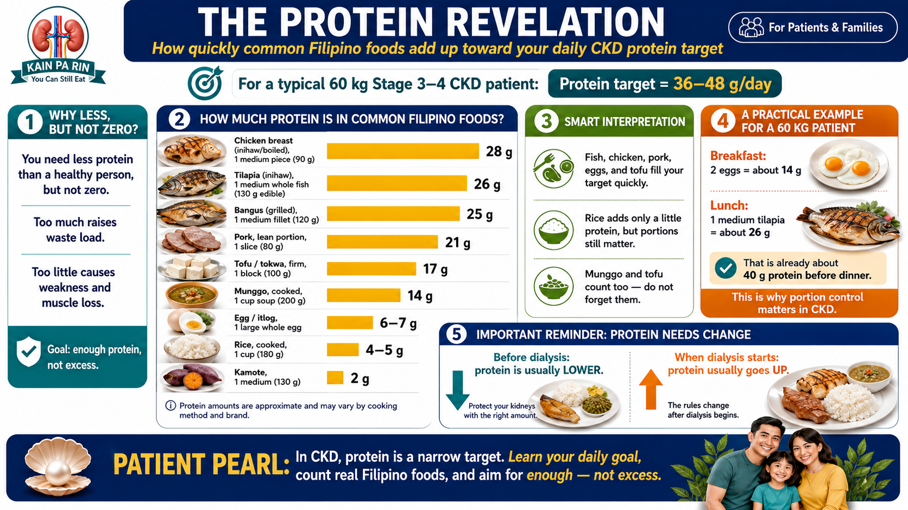
| FoodPagkainPagkaonPagkain | Typical servingKaraniwang servingKabilin-bilin nga servingKaraniwang serving | Protein (g)Protina (g)Protina (g)Protina (g) | NotesMga TalaMga TalaMga Tala |
|---|---|---|---|
| Chicken breast (inihaw/boiled) | 1 medium piece (90 g) | 28 | Best protein quality; limit skin (phosphorus)Pinakamainam na kalidad ng protina; limitahan ang balat (phosphorus)Pinakamaayo nga kalidad sa protina; limitahan ang panit (phosphorus)Pinakamainam a kalidad ning protina; limitahan ing balat (phosphorus) |
| Bangus (milkfish, grilled) | 1 medium fillet (120 g) | 25 | Good choice; avoid daing (high sodium)Magandang pagpipilian; iwasan ang daing (mataas na sodium)Maayong pagpili; likayi ang daing (taas nga sodium)Maayos a pagpili; iwasan ing daing (matas a sodium) |
| Tilapia (inihaw) | 1 medium whole fish (130 g edible) | 26 | Budget-friendly, low phosphorus additivesAbot-kayang presyo, mababang phosphorus additivesBarato, ubos nga phosphorus additivesAbot-kayang presyu, mababang phosphorus additives |
| Pork (liempo, lean portion) | 1 slice (80 g) | 21 | Trim visible fat; avoid processed tocinoAlisin ang nakikitang taba; iwasan ang processed na tocinoTangtangon ang makita nga tambok; likayi ang processed nga tocinoAlisin ing nakikitang taba; iwasan ing processed a tocino |
| Egg (itlog) | 1 large whole egg | 6–7 | High-quality protein; egg white = less phosphorusMataas na kalidad na protina; puti ng itlog = mas kaunting phosphorusTaas nga kalidad nga protina; puti sa itlog = menos nga phosphorusMatas a kalidad ning protina; puti ning itlog = mas kaunting phosphorus |
| Tofu, firm (tokwa) | 1 block (100 g) | 17 | Lower phosphorus than meat; good optionMas mababang phosphorus kaysa karne; magandang pagpipilianUbos nga phosphorus kaysa sa karne; maayong pagpiliMas mababang phosphorus kaysa karne; maayos a pagpili |
| Munggo (cooked) | 1 cup soup (200 g) | 14 | High phosphorus — limit to 1 serving/weekMataas na phosphorus — limitahan sa 1 serving/linggoTaas nga phosphorus — limitahan sa 1 serving/semanaMatas a phosphorus — limitahan sa 1 serving/pue |
| Rice (cooked) | 1 cup (180 g) | 4–5 | Low protein but adds up; watch portion sizeMababang protina ngunit nag-iipon; bantayan ang laki ng servingUbos nga protina apan nagtipon; bantayan ang gidak-on sa servingMababang protina ngem nag-iipon; bantayan ing laki ning serving |
| Kamote (sweet potato) | 1 medium (130 g) | 2 | Negligible protein; carbohydrate sourceNapakakaunting protina; pinagkukunan ng carbohydrateHapit walay protina; tinubdan sa carbohydrateNapakakaunting protina; pinagkukunan ning carbohydrate |
A practical example for a 60 kg patient (target: 40 g protein/day)Isang praktikal na halimbawa para sa 60 kg na pasyente (target: 40 g protina/araw)Usa ka praktikal nga pananglitan para sa 60 kg nga pasyente (target: 40 g protina/adlaw)Metung a praktikal a halimbawa para king 60 kg a pasyente (target: 40 g protina/aldo)
Breakfast: 2 eggs (14 g) + 1 cup rice. Lunch: 1 medium tilapia (26 g) + 1 cup rice + vegetables. That is already 40 grams — dinner should be mostly rice and vegetables, with no additional large protein serving. This is the discipline CKD requires.Almusal: 2 itlog (14 g) + 1 tasa ng kanin. Tanghalian: 1 medium na tilapia (26 g) + 1 tasa ng kanin + mga gulay. Iyon ay 40 gramo na — ang hapunan ay dapat na halos kanin at mga gulay, na walang karagdagang malaking serving ng protina. Ito ang disiplinang kailangan ng CKD.Pamahaw: 2 itlog (14 g) + 1 tasa nga kanin. Pananghalian: 1 medium nga tilapia (26 g) + 1 tasa nga kanin + mga utanon. Kana 40 gramo na — ang panihapon kinahanglan nga kadaghanan kanin ug mga utanon, nga walay dugang nga dagkong serving sa protina. Mao kini ang disiplina nga gikinahanglan sa CKD.Almusal: 2 itlog (14 g) + 1 tasa ning kanin. Tanghalian: 1 medium a tilapia (26 g) + 1 tasa ning kanin + mga gulay. 40 gramo na ita — ing hapunan dapat halos kanin at mga gulay, at e na kailangan pang dagdag a malaking serving ning protina. Iti ing disiplinang kailangan ning CKD.
The CKD-Friendly Kitchen: Green, Yellow, RedAng CKD-Friendly na Kusina: Berde, Dilaw, PulaAng CKD-Friendly nga Kusina: Berde, Dalag, PulaIng CKD-Friendly a Kusina: Berde, Dilaw, Pula
Think of your CKD kitchen as a traffic light. Green foods you can eat freely. Yellow foods you can eat in moderation — one small serving per meal or per day. Red foods need to be avoided or eaten only on rare occasions.Isipin ang iyong kusina para sa CKD bilang isang traffic light. Ang mga berdeng pagkain ay maaari mong kainin nang walang limitasyon. Ang mga dilaw na pagkain ay maaari mong kainin nang katamtaman — isang maliit na serving bawat kainan o bawat araw. Ang mga pulang pagkain ay kailangang iwasan o kinain lamang sa mga bihirang okasyon.Hunahunaa ang imong kusina para sa CKD ingon usa ka traffic light. Ang mga berdeng pagkaon makaon ka nga dili limitado. Ang mga dalag nga pagkaon makaon ka sa katamtaman — usa ka gamay nga serving kada kainan o kada adlaw. Ang mga pula nga pagkaon kinahanglan likayon o kaonon lamang sa talagsaong mga okasyon.Isip ing kusina mu para king CKD bilang metung a traffic light. Ing mga berdeng pagkain malyari mung kainin nang e limitado. Ing mga dilaw a pagkain malyari mung kainin nang katamtaman — metung a maliit a serving bawat kainan o bawat aldo. Ing mga pulang pagkain kailangan iwasan o kinain la sa mga bihirang okasyon.
Important: Potassium restrictions below apply mainly if your blood potassium is elevated. Ask your nephrologist before cutting high-potassium foods — unnecessary restriction can itself cause harm.Mahalaga: Ang mga restriksyon sa potassium sa ibaba ay naaangkop lalo na kung mataas ang iyong potassium sa dugo. Magtanong sa inyong nephrologist bago bawasan ang mga pagkaing mataas sa potassium — ang hindi kinakailangang restriksyon ay maaari ring magdulot ng pinsala.Importante: Ang mga restriksyon sa potassium sa ubos nagamit labi na kon mataas ang imong potassium sa dugo. Pangutana sa imong nephrologist una sa pagtangtang og mga pagkaon nga taas sa potassium — ang dili gikinahanglan nga restriksyon mahimong maka-ingon usab og kadaut.Mahalaga: Ing mga restriksyon king potassium sa baba naaangkop lalona nung matas ing potassium mu sa dugu. Magtanong king nephrologist mu bago bawasan ing mga pagkaing matas sa potassium — ing hindi kailangan a restriksyon malyari ring magdulot ning pinsala.
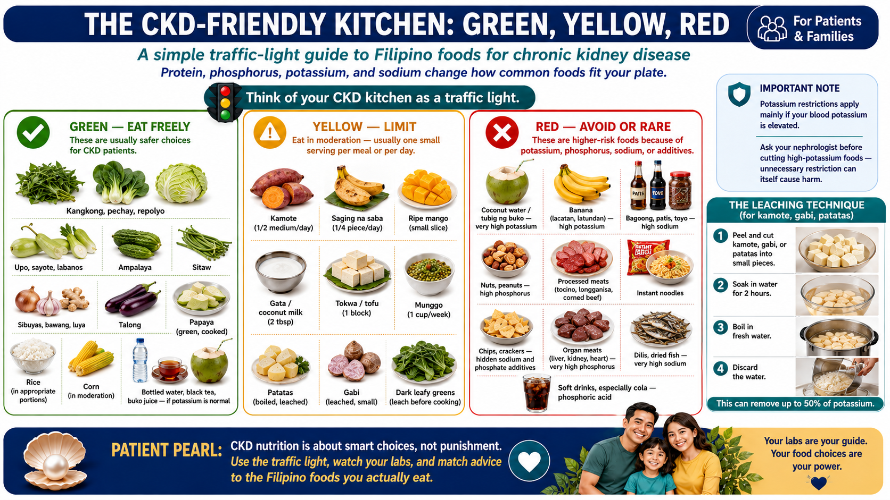
🟢 Green — Eat FreelyBerde — Kumain nang MalayaBerde — Kaon nga LibreBerde — Kumain nang Malaya
- Kangkong, pechay, repolyo
- Upo, sayote, labanos
- Ampalaya (bitter gourd)
- Sitaw (string beans)
- Sibuyas, bawang, luya
- Talong (eggplant)
- Papaya (green, cooked)
- Rice (in appropriate portions)
- Corn (in moderation)
- Bottled water, black tea, buko juice — if potassium is normal
🟡 Yellow — LimitDilaw — LimitahanDalag — LimitahanDilaw — Limitahan
- Kamote (½ medium/day)
- Saging na saba (¼ piece/day)
- Ripe mango (small slice)
- Gata / coconut milk (2 tbsp)
- Tokwa / tofu (1 block)
- Munggo (1 cup/week)
- Patatas (boiled, leached)
- Gabi (leached, small)
- Dark leafy greens (leach before cooking)
🔴 Red — Avoid or RarePula — Iwasan o Bihira LangPula — Likayon o Talagsaon LangPula — Iwasan o Bihira Lang
- Coconut water (tubig ng buko) — very high potassium
- Banana (lacatan, latundan) — high potassium
- Bagoong, patis, toyo — high sodium
- Nuts, peanuts — high phosphorus
- Processed meats (tocino, longganisa, corned beef)
- Instant noodles (Lucky Me, Nissin)
- Chips, crackers — hidden sodium & phosphate additives
- Organ meats (liver, kidney, heart) — very high phosphorus
- Dilis, dried fish — very high sodium
- Soft drinks, especially cola — phosphoric acid
The Leaching TechniqueAng Paraan ng Pag-leachAng Teknik sa Pag-leachIng Paraan ning Pag-leach
High-potassium vegetables (kamote, gabi, patatas) can be made safer by peeling, cutting into small pieces, soaking in water for 2 hours, then boiling in fresh water and discarding the water. This removes up to 50% of the potassium. Not a perfect solution, but useful when variety is needed.Ang mga gulay na mataas sa potassium (kamote, gabi, patatas) ay maaaring gawing mas ligtas sa pamamagitan ng pagbabalat, paggupit sa maliliit na piraso, pagbabad sa tubig ng 2 oras, pagkatapos ay paglaga sa sariwang tubig at pagtatapon ng tubig. Naaalis nito ang hanggang 50% ng potassium. Hindi isang perpektong solusyon, ngunit kapaki-pakinabang kapag kailangan ng pagkakaiba-iba.Ang mga utanon nga taas sa potassium (kamote, gabi, patatas) mahimong himoong mas luwas pinaagi sa pagpanit, pagputol sa gagmay nga piraso, pagbabad sa tubig og 2 oras, dayon pagluto sa bag-ong tubig ug pagtapon sa tubig. Makuha niini ang hangtud 50% sa potassium. Dili usa ka perpektong solusyon, apan mapuslanon kon gikinahanglan ang pagkaon-lainom.Ing mga gulay a matas sa potassium (kamote, gabi, patatas) malyaring gawing mas ligtas sa pamamagitan ning pagbabalat, pagputol king maliliit a piraso, pagbabad sa tubig ning 2 oras, pagkatapos paglaga king sariwang tubig at pagtapon ning tubig. Naaalis niti ang hanggang 50% ning potassium. E isang perpektong solusyon, ngem kapaki-pakinabang nung kailangan ing pagkakaiba-iba.
Building Your PlatePaghahanda ng Iyong PlatoPaghimo sa Imong PlatoPaghanda ning Plato Mu
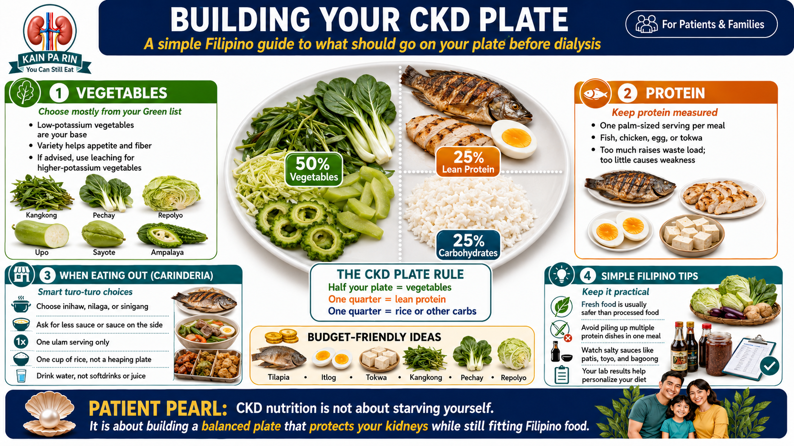
The CKD plate rule: half your plate = vegetables (from the Green list); one quarter = protein (one palm-sized serving of fish, chicken, or egg); one quarter = carbohydrates (one cup of rice or equivalent).Ang panuntunan ng platong CKD: kalahati ng iyong plato = mga gulay (mula sa listahang Berde); isang kapat = protina (isang serving na laki ng palad na isda, manok, o itlog); isang kapat = carbohydrates (isang tasa ng kanin o katumbas).Ang lagda sa plato sa CKD: katunga sa imong plato = mga utanon (gikan sa listahan nga Berde); usa ka kuarto = protina (usa ka serving nga gidak-on sa palad nga isda, manok, o itlog); usa ka kuarto = carbohydrates (usa ka tasa nga kanin o katumbas).Ing panuntunan ning platong CKD: kalahati ning plato mu = mga gulay (bunga ning listahang Berde); metung a kapat = protina (metung a serving a laki ning palad a isda, manok, o itlog); metung a kapat = carbohydrates (metung a tasa ning kanin o katumbas).
At the Carinderia (Turo-Turo)Sa Carinderia (Turo-Turo)Sa Carinderia (Turo-Turo)King Carinderia (Turo-Turo)
The turo-turo is unavoidable for many Filipino patients. How to navigate it safely:Ang turo-turo ay hindi maiiwasan para sa maraming Filipino na pasyente. Paano ito ligtas na ma-navigate:Ang turo-turo dili malihukan alang sa daghang Filipino nga pasyente. Giunsa kini luwas nga ma-navigate:Ing turo-turo e maiwasan para king merakung Filipino a pasyente. Panung iti ligtas a ma-navigate:
Carinderia Survival Guide for CKD PatientsGabay sa Carinderia para sa mga Pasyenteng may CKDGiya sa Carinderia para sa mga Pasyente nga adunay CKDGabay king Carinderia para king mga Pasyenteng may CKD
- Choose inihaw, nilaga, or sinigang over dinuguan, kare-kare, or crispy dishesPumili ng inihaw, nilaga, o sinigang kaysa dinuguan, kare-kare, o mga pritong pagkainPilion ang inihaw, nilaga, o sinigang kaysa sa dinuguan, kare-kare, o mga pritong pagkaonPumili ning inihaw, nilaga, o sinigang kaysa dinuguan, kare-kare, o mga pritong pagkain
- Ask for your ulam without sauce or with sauce on the side — most sauce is very high in sodiumHumingi ng iyong ulam na walang sarsa o may sarsa sa gilid — ang karamihan ng sarsa ay napakataas sa sodiumHangyo og imong ulam nga walay sarsa o adunay sarsa sa kilid — ang kadaghanan sa sarsa taas kaayo sa sodiumHumingi ning ulam mu a walang sarsa o may sarsa sa kilid — karamihan ning sarsa napakataas king sodium
- One ulam serving only — not two or three like a typical Filipino plateIsang serving ng ulam lamang — hindi dalawa o tatlo tulad ng karaniwang platong FilipinoUsa ka serving sa ulam lamang — dili duha o tulo sama sa kabilin-bilin nga Filipino nga platoMetung a serving ning ulam la — e adua o atlo kagaya ning karaniwang platong Filipino
- Pick vegetable dishes: pinakbet (without bagoong), pinagong, or bulanglangPumili ng mga gulay: pinakbet (walang bagoong), pinagong, o bulanglangPilia ang mga utanon: pinakbet (wala bagoong), pinagong, o bulanglangPumili ning mga gulay: pinakbet (walang bagoong), pinagong, o bulanglang
- Avoid processed ulam: corned beef, sardines, Spam, vienna sausageIwasan ang processed na ulam: corned beef, sardines, Spam, vienna sausageLikayi ang processed nga ulam: corned beef, sardines, Spam, vienna sausageIwasan ing processed a ulam: corned beef, sardines, Spam, vienna sausage
- One cup of rice — not a heaping plateIsang tasa ng kanin — hindi isang punong platoUsa ka tasa nga kanin — dili usa ka puno nga platoMetung a tasa ning kanin — e isang punong plato
- Drink water, not softdrinks or juiceUminom ng tubig, hindi softdrinks o juiceInum-a og tubig, dili softdrinks o juiceInumin ing tubig, e softdrinks o juice
At a Fiesta or Family CelebrationSa Isang Pista o Pagdiriwang ng PamilyaSa usa ka Piyesta o Pamilya nga SelebrasyonKing Isang Pista o Pagdiriwang ning Pamilya
✓ Reasonable choices✓ Makatwirang mga pagpipilian✓ Makatarungang mga pagpili✓ Makatwirang mga pagpili
Lechon: 1–2 small lean pieces (avoid the crispy skin — high phosphorus and fat). Chicken inasal: breast portion, no skin. Pansit: small serving. Fresh fruit: small slice of watermelon or papaya. Plain rice.Lechon: 1–2 maliliit na payat na piraso (iwasan ang malutong na balat — mataas sa phosphorus at taba). Chicken inasal: bahagi ng dibdib, walang balat. Pansit: maliit na serving. Sariwang prutas: maliit na hiwa ng pakwan o papaya. Simpleng kanin.Lechon: 1–2 ka gamay nga manipis nga piraso (likayi ang malutong nga panit — taas sa phosphorus ug tambok). Chicken inasal: bahin sa dughan, walay panit. Pansit: gamay nga serving. Sariwang prutas: gamay nga hiwa sa pakwan o papaya. Simpleng kanin.Lechon: 1–2 maliit a payat a piraso (iwasan ing malutong a balat — matas sa phosphorus at taba). Chicken inasal: bahagi ning dughan, walang balat. Pansit: maliit a serving. Sariwang prutas: maliit a hiwa ning pakwan o papaya. Simpleng kanin.
✗ Be cautious✗ Mag-ingat✗ Pagmatngon✗ Mag-ingat
Kare-kare (very high in nuts/peanuts — phosphorus). Dinuguan (blood — phosphorus). Leche flan and maja blanca (dairy and high sugar). Softdrinks and soda. Multiple protein dishes at once.Kare-kare (napakataas sa mani/peanuts — phosphorus). Dinuguan (dugo — phosphorus). Leche flan at maja blanca (dairy at mataas na asukal). Softdrinks at soda. Maraming putahe ng protina nang sabay-sabay.Kare-kare (taas kaayo sa mani/peanuts — phosphorus). Dinuguan (dugo — phosphorus). Leche flan ug maja blanca (dairy ug taas nga asukar). Softdrinks ug soda. Daghan nga putahe sa protina sabay-sabay.Kare-kare (napakataas sa mani/peanuts — phosphorus). Dinuguan (dugu — phosphorus). Leche flan at maja blanca (dairy at matas a asukal). Softdrinks at soda. Merakung putahe ning protina sabay-sabay.
Budget CKD EatingPagkain na may CKD sa Mababang BadyetPagkaon nga adunay CKD sa Gamay nga BadyetPagkain Ampo CKD king Mababang Badyet
CKD nutrition does not have to be expensive. The cheapest protein sources for kidney patients in the Philippines:Ang nutrisyon para sa CKD ay hindi kailangang mahal. Ang pinakamurang mga pinagkukunan ng protina para sa mga pasyenteng may sakit sa bato sa Pilipinas:Ang nutrisyon para sa CKD dili kinahanglan nga mahal. Ang labing barato nga mga tinubdan sa protina para sa mga pasyente nga adunay sakit sa bato sa Pilipinas:Ing nutrisyon para king CKD e kailangang mahal. Ing pinaka-mura a mga pinagkukunan ning protina para king mga pasyenteng may sakit king bato king Pilipinas:
- Tilapia — ₱80–120/kilo, low phosphorus additives, excellent protein quality₱80–120/kilo, mababang phosphorus additives, napakagandang kalidad ng protina₱80–120/kilo, ubos nga phosphorus additives, maayong kalidad sa protina₱80–120/kilo, mababang phosphorus additives, napakagandang kalidad ning protina
- Itlog (egg) — ₱8–12 each, highest biological value protein per peso₱8–12 bawat isa, pinakamataas na biological value protein bawat piso₱8–12 kada usa, labing taas nga biological value protein kada piso₱8–12 bawat isa, pinakamatas a biological value protein bawat piso
- Tokwa (tofu) — ₱15–25/block, lower phosphorus than meat₱15–25/bloke, mas mababang phosphorus kaysa karne₱15–25/bloke, ubos nga phosphorus kaysa sa karne₱15–25/bloke, mas mababang phosphorus kaysa karne
- Bangus belly — often cheaper than the whole fish, equally nutritiouskadalasang mas mura kaysa sa buong isda, katulad ang sustansyakanunay mas barato kaysa sa tibuok isda, managsama ang sustansyamadalas mas mura kaysa king buung isda, katulad ing sustansya
- Kangkong, pechay, repolyo — ₱20–40/bundle, Green-list vegetables₱20–40/bigkis, mga gulay sa listahang Berde₱20–40/bugkos, mga utanon sa listahan nga Berde₱20–40/bigkis, mga gulay king listahang Berde
Reading Your Lab Results as a Nutrition CompassAng Pagbabasa ng Iyong Mga Resulta ng Lab bilang Gabay sa NutrisyonAng Pagbasa sa Imong mga Resulta sa Lab ingon Giya sa NutrisyonIng Pagbasa ning Resulta mu king Lab bilang Gabay king Nutrisyon
Your quarterly blood tests are not just numbers for your doctor. They tell you how well your diet is working. Learn to read them.Ang iyong mga pagsusuri sa dugo bawat tatlong buwan ay hindi lamang mga numero para sa iyong doktor. Sinasabi nila kung gaano kahusay ang iyong diyeta. Alamin kung paano basahin ang mga ito.Ang imong mga blood test matag tulo ka bulan dili lamang mga numero para sa imong doktor. Gisulti nila kung unsa ka maayo ang imong diyeta. Tun-an kung giunsa kini basahon.Ing mga blood test mu bawat tatlung bulan e la basta numero para king doktor mu. Sinasabi da kung manung kasyang ing diyeta mu. Aral kung panung basaen da.
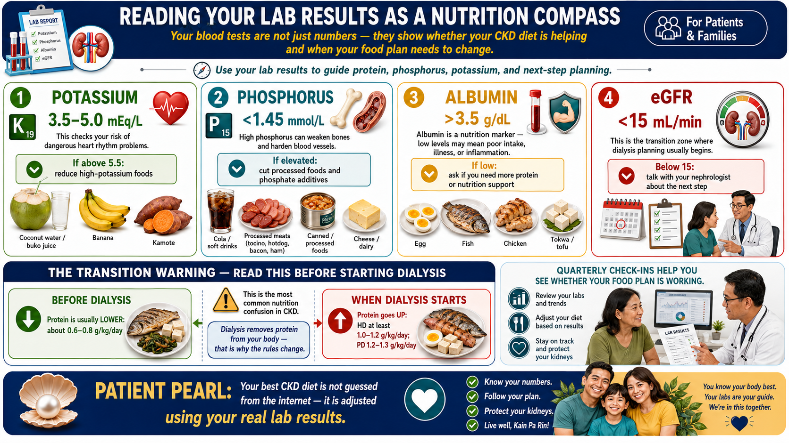
The Transition Warning — Read This Before Starting DialysisBabala sa Paglipat — Basahin Ito Bago Magsimula sa DialysisPasidaan sa Transisyon — Basaha Kini Bago Magsugod sa DialysisBabala king Paglipat — Basaen Ini Bago Magsimula king Dialysis
When you begin dialysis, your protein target reverses completely. On hemodialysis, you need more protein — at least 1.0–1.2 g/kg/day. On peritoneal dialysis, even more: 1.2–1.3 g/kg/day. Every session removes protein from your body. The careful "eat less protein" advice from CKD Stage 3–4 now becomes "eat more protein." This is not a mistake — it is the most common nutrition confusion in dialysis patients. See our companion guide on eating on dialysis for the full details.Kapag nagsimula ka na sa dialysis, ganap na binaliktad ang iyong target sa protina. Sa hemodialysis, kailangan mo ng mas maraming protina — hindi bababa sa 1.0–1.2 g/kg/araw. Sa peritoneal dialysis, mas marami pa: 1.2–1.3 g/kg/araw. Bawat sesyon ay nag-aalis ng protina sa iyong katawan. Ang maingat na payo na "kumain ng mas kaunting protina" mula sa CKD Stage 3–4 ay nagiging "kumain ng mas maraming protina." Hindi ito pagkakamali — ito ang pinaka-karaniwang pagkalito sa nutrisyon sa mga pasyente sa dialysis. Tingnan ang aming kasama na gabay sa pagkain sa dialysis para sa buong detalye.Sa pagsugod nimo sa dialysis, hingpit nga naabot ang imong target sa protina. Sa hemodialysis, kinahanglan nimo og dugang protina — labing menos 1.0–1.2 g/kg/adlaw. Sa peritoneal dialysis, labaw pa: 1.2–1.3 g/kg/adlaw. Ang matag sesyon nag-kuha og protina gikan sa imong lawas. Ang maampingon nga tambag nga "kaon og menos nga protina" gikan sa CKD Stage 3–4 karon nahimong "kaon og labaw nga protina." Dili kini sayop — kini ang labing komon nga kalibog sa nutrisyon sa mga pasyente sa dialysis. Tan-awa ang among kauban nga giya sa pagkaon sa dialysis alang sa bug-os nga detalye.Nung magsimula ka na sa dialysis, ganap a nababaligtad ing target mu king protina. King hemodialysis, kailangan mu ning mas maraming protina — hindi bababa sa 1.0–1.2 g/kg/aldo. King peritoneal dialysis, mas marami pa: 1.2–1.3 g/kg/aldo. Bawat sesyon nag-aalis ning protina king katawan mu. Ing maingat a payo a "kumain ning mas kaunting protina" bunga ning CKD Stage 3–4 nagiging "kumain ning mas maraming protina." E iti pagkakamali — iti ing pinaka-karaniwang pagkalito king nutrisyon king mga pasyente sa dialysis. Tingnan ing kasama a gabay mi king pagkain sa dialysis para king buung detalye.
Honest FAQ from Filipino CKD PatientsTapat na mga FAQ mula sa mga Filipino na Pasyenteng may CKDMatinuoron nga FAQ gikan sa mga Filipino nga Pasyente nga adunay CKDTapat a mga Tanong bunga king mga Filipino a Pasyenteng may CKD
These are the questions patients actually ask during consultations — answered directly, without unnecessary hedging.Ito ang mga tanong na talagang tinatanong ng mga pasyente sa mga konsultasyon — sinasagot nang diretso, nang walang hindi kinakailangang pag-aalangan.Kini ang mga pangutana nga tinuod nga gipangutana sa mga pasyente atol sa mga konsultasyon — gitubag diretso, nga walay dili gikinahanglan nga pag-ulag-ulag.Iti ining mga tanong a talagang itinatanong ning mga pasyente king mga konsultasyon — sinasagot nang diretso, alang e sa hindi kailangan a pag-aalangan.
Yes — rice is actually a reasonable carbohydrate source for CKD because it is relatively low in potassium and phosphorus compared to whole grains. The issue is portion size. One cup of cooked rice per meal is appropriate. Three cups per meal — as many Filipinos eat — adds 12–15 g of protein and significant carbohydrate load. Portion control, not elimination.Oo — ang kanin ay talagang isang makatwirang pinagkukunan ng carbohydrate para sa CKD dahil medyo mababa ito sa potassium at phosphorus kumpara sa buong butil. Ang isyu ay ang laki ng serving. Ang isang tasa ng lutong kanin bawat kainan ay angkop. Tatlong tasa bawat kainan — tulad ng kinakain ng maraming Filipino — ay nagdaragdag ng 12–15 g ng protina at malaking carbohydrate. Kontrol sa dami, hindi pag-iwas.Oo — ang kanin usa ka makatarungang tinubdan sa carbohydrate para sa CKD kay medyo ubos kini sa potassium ug phosphorus kumpara sa tibuok nga butil. Ang isyu mao ang gidak-on sa serving. Usa ka tasa nga luto nga kanin kada kainan angay. Tulo ka tasa kada kainan — sama sa daghan nga Filipino — nagdugang og 12–15 g nga protina ug dakong karga sa carbohydrate. Kontrol sa gidak-on, dili paglikay.Oo — ing kanin talagang makatwirang pinagkukunan ning carbohydrate para king CKD kakaugnayan e mataas iti sa potassium at phosphorus kumpara king buung butil. Ing isyu ing laki ning serving. Metung a tasa ning lutung kanin bawat kainan angkop. Atlung tasa bawat kainan — kagaya ning kinakain ning merakung Filipino — nagdaragdag ning 12–15 g ning protina at malaking carbohydrate. Kontrol king dami, e pagiiwas.
No. Coconut water contains 600 mg of potassium per 240 mL cup — comparable to two bananas. It is one of the highest-potassium beverages commonly consumed in the Philippines. For CKD patients with elevated potassium, a single glass can be dangerous. Buko juice (the flesh blended with water) is similarly high. Avoid both if your potassium is elevated.Hindi. Ang tubig ng buko ay naglalaman ng 600 mg ng potassium bawat 240 mL na tasa — maihahambing sa dalawang saging. Ito ay isa sa mga inuming pinaka-mataas sa potassium na karaniwang iniinom sa Pilipinas. Para sa mga pasyenteng may CKD na may mataas na potassium, ang isang baso ay maaaring mapanganib. Ang buko juice (laman na hinaluan ng tubig) ay katulad ding mataas. Iwasan ang dalawa kung mataas ang iyong potassium.Dili. Ang tubig sa buko adunay sulod nga 600 mg sa potassium kada 240 mL nga tasa — pareho sa duha ka saging. Kini usa sa pinakataas nga potassium nga mga inumin nga kasagarang gigamit sa Pilipinas. Alang sa mga pasyente nga adunay CKD nga adunay taas nga potassium, ang usa ka baso mahimong delikado. Ang buko juice (ang karne nga sinagolan og tubig) managsama usab ka taas. Likayi ang duha kon taas ang imong potassium.Ala. Ing tubig ning buko naglalaman ning 600 mg ning potassium bawat 240 mL a tasa — maihahambing king adwang saging. Iti metung king mga inumeng pinaka-matas king potassium a karaniwang inumin king Pilipinas. Para king mga pasyenteng may CKD a may matas a potassium, metung a basu malyaring mapanganib. Ing buko juice (laman a hinaluan ning tubig) katulad ding matas. Iwasan ing adwa nung matas ing potassium mu.
One or two small lean pieces is manageable. The crispy skin is the problem — it concentrates phosphorus, saturated fat, and sodium. The lean pork meat itself has reasonable protein quality. The key is volume: one ulam-sized serving, not repeated helpings. And compensate by keeping the rest of the day's meals lighter on protein.Isa o dalawang maliit na payat na piraso ay mapamamahalaan. Ang malutong na balat ang problema — ito ay nagtatago ng phosphorus, saturated fat, at sodium. Ang payat na karne ng baboy mismo ay may makatwirang kalidad ng protina. Ang susi ay ang dami: isang serving na laki ng ulam, hindi paulit-ulit na pagkuha. At bayaran ito sa pamamagitan ng pagpapanatiling mas magaan ang natitirang kainan sa araw sa protina.Usa o duha ka gamay nga manipis nga piraso mahimong tagoan. Ang malutong nga panit ang problema — nagtigom kini og phosphorus, saturated fat, ug sodium. Ang manipis nga karne sa baboy mismo adunay makatarungang kalidad sa protina. Ang yawe mao ang gidak-on: usa ka serving nga gidak-on sa ulam, dili paulit-ulit nga pagkuha. Ug bayaron pinaagi sa pagpadayon sa pag-agian sa ubang pagkaon sa adlaw nga mas gaan sa protina.Metung o adwang maliit a payat a piraso mapamamahalaan. Ing malutong a balat ing problema — iti nagtatago ning phosphorus, saturated fat, at sodium. Ing payat a karne ning baboy mismo may makatwirang kalidad ning protina. Ing susi ing dami: metung a serving a laki ning ulam, e paulit-ulit a pagkuha. At bayaran iti sa pamamagitan ning pagpapanatiling mas magaan ing natitira a kainan king aldo king protina.
One teaspoon of bagoong contains 350–500 mg of sodium. One tablespoon of patis contains 900–1,100 mg. Your entire day's sodium budget is 2,000 mg. A single serving of bagoong with kare-kare uses 25% of that budget — before you have eaten anything else. These condiments are not safe for frequent CKD use. Use calamansi, ginger, and garlic for flavor instead.Ang isang kutsaritang bagoong ay naglalaman ng 350–500 mg ng sodium. Ang isang kutsarang patis ay naglalaman ng 900–1,100 mg. Ang iyong buong badyet ng sodium sa isang araw ay 2,000 mg. Ang isang serving ng bagoong na may kare-kare ay gumagamit ng 25% ng badyet na iyon — bago ka pa man kumain ng anupaman. Ang mga sangkap na ito ay hindi ligtas para sa madalas na paggamit ng CKD. Gamitin ang calamansi, luya, at bawang para sa lasa sa halip.Ang usa ka kutsarita nga bagoong adunay sulod nga 350–500 mg nga sodium. Ang usa ka kutsara nga patis adunay sulod nga 900–1,100 mg. Ang imong tibuok nga badyet sa sodium sa usa ka adlaw 2,000 mg. Ang usa ka serving nga bagoong uban sa kare-kare naggamit og 25% niadtong badyet — sa wala pa ka makakaon og bisan unsa. Kini nga mga condiment dili luwas alang sa kanunay nga paggamit sa CKD. Gamita ang calamansi, luya, ug bawang alang sa lasa hinuon.Metung a kutsaritang bagoong naglalaman ning 350–500 mg ning sodium. Metung a kutsarang patis naglalaman ning 900–1,100 mg. Ing buung badyet mu ning sodium king metung a aldo 2,000 mg. Metung a serving ning bagoong ampo kare-kare gumagamit ning 25% nitang badyet — bago ka pa man kumain ning anupaman. Iting mga sangkap e ligtas para king madalas a paggamit king CKD. Gamitin ing calamansi, luya, at bawang para king lasa king halip.
Sinigang is one of the better Filipino dishes for CKD patients — especially sinigang na isda (fish) or sinigang na hipon (shrimp) cooked without additional patis or toyo in the broth. The vegetables (kangkong, sitaw, labanos) are from the Green list. The protein serving should be one moderate portion. Avoid drinking the entire broth — it concentrates sodium from the sourness agents and any dissolved minerals.Ang sinigang ay isa sa mas mainam na Filipino na putahe para sa mga pasyenteng may CKD — lalo na ang sinigang na isda o sinigang na hipon na niluto nang walang karagdagang patis o toyo sa sabaw. Ang mga gulay (kangkong, sitaw, labanos) ay mula sa listahang Berde. Ang serving ng protina ay dapat na isang katamtamang bahagi. Iwasan ang pag-inom ng buong sabaw — nagtatago ito ng sodium mula sa mga sangkap na pampaasim at anumang natunaw na mineral.Ang sinigang usa sa mas maayo nga Filipino nga putahe para sa mga pasyente nga adunay CKD — ilabi na ang sinigang na isda o sinigang na hipon nga giluto nga walay dugang patis o toyo sa sabaw. Ang mga utanon (kangkong, sitaw, labanos) gikan sa listahan nga Berde. Ang serving sa protina kinahanglan usa ka katamtamang bahin. Likayi ang pag-inum sa tibuok sabaw — nagtigom kini og sodium gikan sa mga souring agents ug bisan unsang natunaw nga mineral.Ing sinigang metung king mas mainam a Filipino a putahe para king mga pasyenteng may CKD — lalona ing sinigang na isda o sinigang na hipon a niluto nang walang dagdag a patis o toyo king sabaw. Ing mga gulay (kangkong, sitaw, labanos) bunga ning listahang Berde. Ing serving ning protina dapat metung a katamtamang bahagi. Iwasan ing pag-inom ning buung sabaw — nagtatago iti ning sodium bunga ning mga sangkap a pampaasim at anumang natunaw a mineral.
Evidence Base: Protein Restriction in CKD
The evidence for low-protein diets in CKD slowing progression is real but modest. The clinical conversation has shifted from "does protein restriction work?" to "how do we achieve it without causing protein-energy wasting?" — especially in Filipino patients where diet history, food costs, and family cooking make strict adherence uniquely challenging.
Key Trial Evidence
MDRD Study (Klahr et al., NEJM 1994)
Very low protein diet (0.28 g/kg/d + ketoanalogues) vs LPD (0.58 g/kg/d) in CKD stages 3–4. Primary endpoint not met, but post-hoc analysis showed GFR decline slowed by 1.1 mL/min/yr. Established the framework for protein restriction in CKD.
PLANET I & II (de Zeeuw et al., 2011)
Confirmed proteinuria reduction with low-protein plus RAS blockade. Protein restriction alone accounts for roughly 30% of the anti-proteinuric effect — the remainder from RASi. Synergistic effect important for counseling.
KDIGO 2024 Protein Recommendations
Key references: Klahr S et al. NEJM 1994;330:877–884 (MDRD) · de Zeeuw D et al. PLANET I/II. J Am Soc Nephrol 2011 · KDIGO 2024 CKD Clinical Practice Guideline (Chapters 3.4, 5.3) · Kalantar-Zadeh K, Fouque D. NEJM 2017;377:1765–1776
Filipino Patients & Protein-Energy Wasting
Protein-energy wasting (PEW) — defined by ISRNM 2023 as the pathological loss of body protein and energy stores — is endemic in CKD patients approaching dialysis initiation. In Philippine nephrology practice, the dual burden of wasting (from under-nutrition and uremic anorexia) alongside inappropriate dietary restriction creates a compounding challenge.
Screening Tools
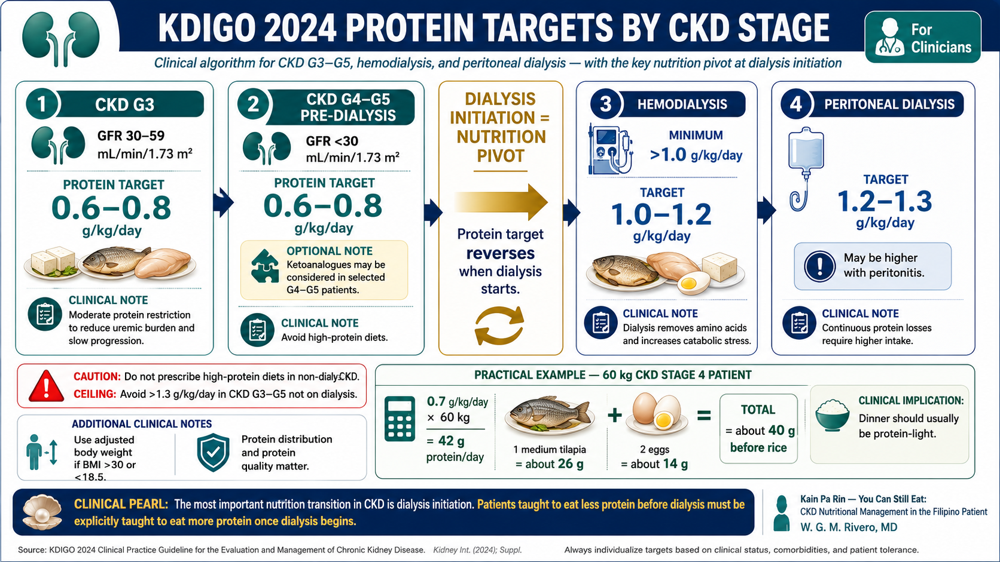
Subjective Global Assessment (SGA)
7-point validated tool covering weight change, dietary intake, GI symptoms, functional capacity, and physical examination. SGA A = well nourished; B = mild-moderate malnutrition; C = severe. Grade B or C warrants dietitian referral and supplement consideration.
Handgrip Strength
Dynamometer measurement of non-dominant hand. Age- and sex-adjusted Filipino norms from PhilSEN data. Decline >5% over 3 months is a PEW flag. Correlates strongly with all-cause mortality in dialysis patients.
Biochemical Markers
Albumin <3.5 g/dL (chronic inflammation marker, not just nutrition). Prealbumin <30 mg/dL (more sensitive to acute change). BUN:Cr ratio <10 suggests inadequate protein intake; >20 suggests excessive protein intake or GI bleeding.
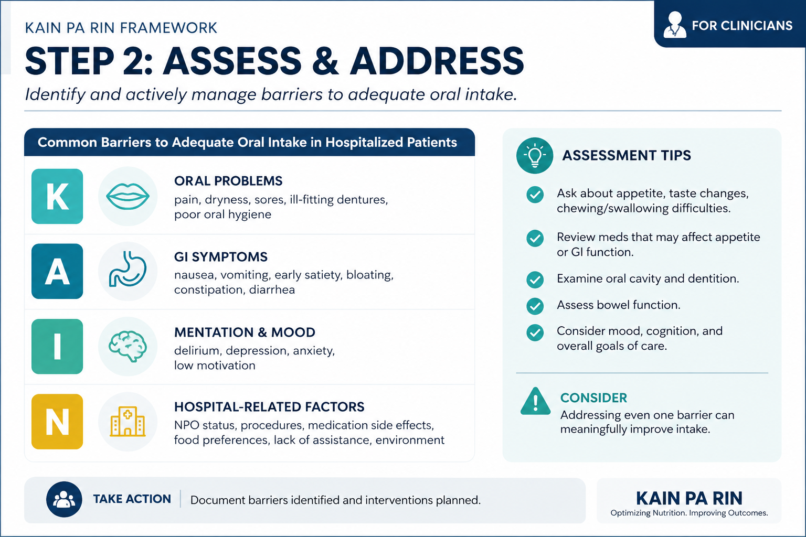
Key references: Fouque D et al. ISRNM Consensus 2023 (PEW definition update) · Fiaccadori E et al. Clin Nutr 2021 (nutritional assessment in CKD) · Leon JB et al. CJASN 2006 (PEW prevalence pre-dialysis)
Protein in Philippine Clinical Practice
The gap between the 0.6–0.8 g/kg/day target and what Filipino patients actually consume creates a clinical challenge. National food surveys suggest mean Filipino protein intake of 58 g/day in lower-income households — already close to the CKD target, but the composition is heavily rice-based, with intermittent high-protein ulam meals rather than consistent, distributed intake.
Practical Protein Calculation
Example: 60 kg patient, CKD Stage 4 (GFR 22 mL/min)
Target: 0.7 g/kg/day × 60 kg = 42 g protein/day. Use adjusted body weight if BMI >30 or <18.5. One medium tilapia (26 g) + 2 eggs (14 g) = 40 g — already at target before accounting for rice (4–5 g/cup). Clinical implication: dinner should be protein-light (vegetables + rice only). This is a dramatic change from typical Filipino meal structure.
The protein content table in the patient section (above) also applies clinically. Share the table directly with patients and families — it is one of the most effective counseling tools because it makes the abstract target concrete.
Key references: FNRI 2019 National Nutrition Survey (Filipino dietary patterns) · Kalantar-Zadeh K et al. JASN 2017 (protein intake in CKD) · Cano N et al. ESPEN guidelines on nutrition in renal failure 2009
Phosphorus Bioavailability: The Hidden Variable
Total phosphorus content of a food understates clinical risk. Bioavailability — the fraction absorbed — varies three-fold between food categories. Counseling based on total phosphorus rather than bioavailable phosphorus leads to unnecessary restriction of plant proteins while permitting high-absorption processed foods.
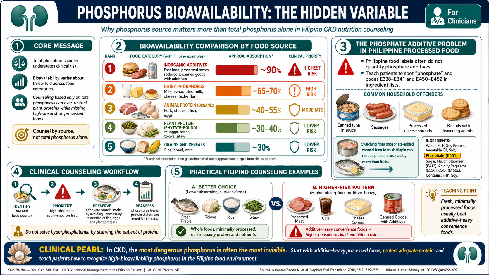
| Phosphorus source | Examples (Filipino context) | Absorption | Clinical priority |
|---|---|---|---|
| Inorganic additives | Fast food, processed meats, sodas, canned goods — ingredient list contains "phosphate" | ~90% | Highest Risk |
| Dairy phosphorus | Milk, evaporated milk (Alaska), cheese, leche flan | ~65–70% | High Risk |
| Animal protein (organic) | Pork, chicken, fish, eggs | ~40–55% | Moderate |
| Plant protein (phytate-bound) | Munggo, beans, tokwa, sitaw | ~30–40% | Lower Risk |
| Grains & cereals | Rice, bread, corn | ~30% | Lower Risk |
The phosphate additive problem in Philippine processed food
Philippine FDA does not require quantitative phosphate additive disclosure. Patients must be taught to identify E338–E341, E450–E452, and "phosphate" in ingredient lists. Common high-phosphate offenders in Filipino households: Century Tuna in sauce, sausages, processed cheese spreads, biscuits with leavening agents. Switching from canned tuna-in-brine (phosphate-added) to fresh tilapia reduces phosphorus load by >50%.
Key references: Noori N et al. CJASN 2010 (phosphorus bioavailability) · Sullivan C et al. J Ren Nutr 2009 (phosphate additives) · Moe SM et al. Clin J Am Soc Nephrol 2011 (plant vs animal phosphorus)
Potassium: Individualization and the Management Ladder
Hyperkalemia in CKD is a common reason for urgent intervention but frequently results in overly broad dietary restriction. Not all CKD patients require potassium limitation — dietary potassium restriction should follow confirmed persistent hyperkalemia, not a single elevated result or a precautionary protocol applied to all CKD patients.
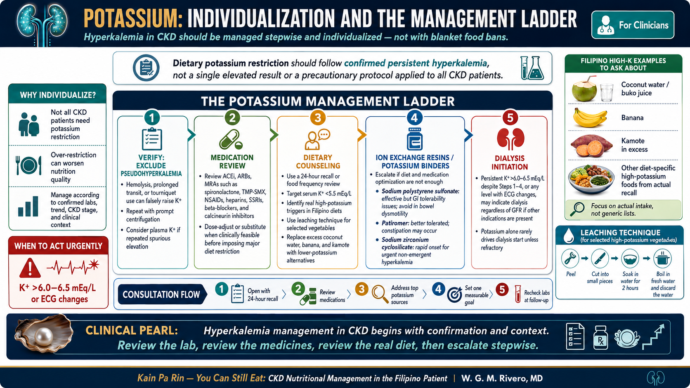
Verify: Exclude Pseudohyperkalemia
Hemolysis from difficult venipuncture, prolonged transit to lab, or tourniquet use can raise K+ by 0.5–1.5 mEq/L. Repeat with prompt centrifugation. Consider plasma K+ if repeated spurious elevation.
Medication Review
ACEi, ARBs, MRAs (spironolactone), TMP-SMX (amiloride-like effect), NSAIDs, heparins, SSRIs, beta-blockers, calcineurin inhibitors. Dose-adjust or substitute where clinically feasible before initiating dietary restriction or binders.
Dietary Counseling
Identify high-potassium foods in patient's actual diet (24-hour recall or food frequency). Leaching technique for vegetables. Substitute high-K foods (coconut water, banana, kamote in excess) with low-K alternatives. Target serum K+ <5.5 mEq/L.
Ion Exchange Resins
Sodium polystyrene sulfonate (Kayexalate, 15–60 g/day) — efficacious but GI tolerability issues common; avoid in bowel dysmotility. Patiromer (8.4 g OD–TID) — better tolerated, constipation the main side effect. Sodium zirconium cyclosilicate (ZS-9) — onset within 1 hour, preferred for urgent-non-emergent hyperkalemia.
Dialysis Initiation
Persistent K+ >6.0–6.5 mEq/L despite Steps 1–4, or any level with ECG changes, is an indication to initiate dialysis regardless of GFR if the patient meets other indications. Potassium alone rarely drives dialysis start unless refractory.
Key references: KDIGO 2024 CKD Guideline (Chapter 4.2, hyperkalemia) · Kovesdy CP. JASN 2020 (management of hyperkalemia in CKD) · Bandak G et al. CJASN 2023 (patiromer vs SPS comparison)
The Nutrition Pivot at Dialysis Initiation
The single most consequential nutritional event in CKD management is not a dietary tweak — it is the complete reversal of protein targets at dialysis initiation. Patients who internalized "eat less protein" for years must now be counseled urgently to eat more. This transition is poorly executed in most Philippine dialysis units, leading to progressive protein-energy wasting in the first year on dialysis.
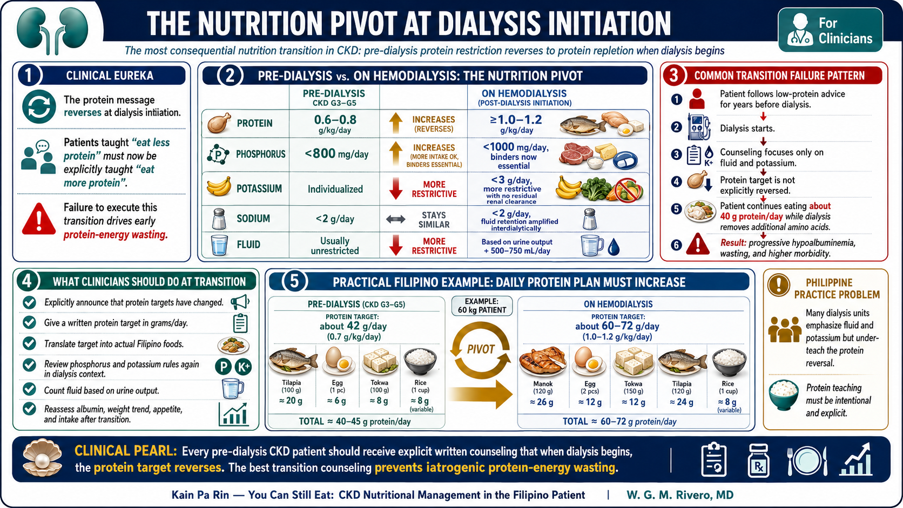
Common transition failure pattern in Philippine dialysis
Patient starts dialysis after years of LPD adherence. Dietary counseling at dialysis center focuses on fluid and potassium (the acute concerns) without explicitly reversing the protein message. Patient continues eating 40 g protein/day while dialysis removes an additional 10–12 g amino acids per session. Net result: progressive hypoalbuminemia, wasting, and increased mortality. Every pre-dialysis patient should receive explicit written counseling that protein targets will reverse when dialysis begins.
Key references: Ikizler TA et al. KDOQI Nutrition Guidelines 2020 (dialysis protein targets) · Fouque D et al. NDT 2007 (protein requirements on dialysis) · Kalantar-Zadeh K et al. Sem Nephrol 2017 (wasting in dialysis)
A 10-Minute CKD Nutrition Consultation Framework
Standard nephrology consultations in Philippine practice run 10–20 minutes. A structured nutrition assessment need not take longer than 10 minutes if organized efficiently.
Open with the 24-hour food recall (2 min)
"Tell me everything you ate and drank yesterday — from when you woke up until you went to sleep." Listen for: total protein sources, high-phosphorus foods, high-potassium foods, sodium sources, meal timing. Do not interrupt or correct during recall.
Screen for PEW (2 min)
Check weight vs last visit (trend, not single value). Ask about appetite and satiety. Note muscle wasting on inspection — temporal wasting, thenar wasting. Order handgrip if equipment available. Flag if albumin <3.5 or any unintentional weight loss >5% in 3 months.
State the current protein target explicitly (1 min)
"Your kidneys are working at [X]%. For now, your protein target is [Y] grams per day. One medium fish or one piece of chicken is your daily protein — not per meal, per day." Make it concrete, not theoretical.
Address the top two problem foods from the recall (3 min)
Identify the two biggest offenders in their actual diet — not a generic list. Common ones in Filipino patients: bagoong/patis (sodium), instant noodles (sodium + phosphate additives), coconut water (potassium), dilis or dried fish (sodium). Propose one specific substitute for each.
Set one measurable goal for next visit (2 min)
"Between now and your next visit in 3 months, your goal is to keep your potassium below 5.5. That means [specific change]. We will check your labs at the next visit." Patients comply better with a single, specific, measurable target than with a comprehensive dietary overhaul.
Nutrition Monitoring in CKD: Frequency and Flags
| Parameter | CKD G3 | CKD G4–G5 | Action threshold |
|---|---|---|---|
| Serum potassium | Every 3–6 months | Every 1–3 months | >5.5 mEq/L: escalate management |
| Serum phosphorus | Every 3–6 months | Every 1–3 months | >1.45 mmol/L: dietary review + consider binder |
| Albumin | Every 6 months | Every 3 months | <3.5 g/dL: PEW workup, dietitian referral |
| BUN / BUN:Cr ratio | Every 3–6 months | Every 1–3 months | BUN:Cr <10: consider inadequate protein intake |
| Body weight | Every visit | Every visit | >5% loss in 3 months: PEW evaluation |
| SGA or nutrition screen | Annually | Every 6 months | SGA B or C: dietitian referral mandatory |
| 24-hour dietary recall | Every 6 months | Every 3 months | Basis for personalized counseling at each visit |
Key references: KDIGO 2024 (monitoring frequency tables) · KDOQI 2020 Nutrition Guideline (assessment tools) · Carrero JJ et al. JASN 2018 (nutritional surveillance in CKD)
Philippine Clinical Context
PhilHealth and Dietitian Access
PhilHealth outpatient renal benefit packages (as of 2024) cover nephrologist consultations but do not include a separate dietitian benefit for pre-dialysis CKD patients. Most government hospitals with nephrology units have registered nutritionist-dietitians; private settings have variable access. For patients without dietitian access, the nephrology team must provide targeted nutritional counseling directly — the 10-minute framework above is designed for this constraint.
Ketoanalogue Access and Cost
Ketoanalogues in CKD G4–G5 (VLPD)
Very low protein diet (0.3–0.4 g/kg/day) supplemented with ketoanalogues (Ketosteril, Nephrotrans) slows CKD progression and reduces uremic symptoms in selected patients. Cost: ₱200–300/day for full dose (3 tabs per 10 kg body weight TID). Not covered by PhilHealth. Effective mainly in motivated, compliant patients with family support.
Practical Substitutions
When formal ketoanalogue supplementation is not affordable, ensuring high biological value protein (egg whites, high-quality fish) within the 0.6–0.8 g/kg target achieves most of the benefit. Essential amino acid content and protein efficiency ratio are higher in animal-source protein, making each gram more efficient for muscle maintenance.
Cultural Barriers to CKD Nutrition Adherence
The family cooking challenge
In Filipino households, the patient does not cook for themselves — they eat what the family eats. CKD dietary counseling must include the family member who cooks, not just the patient. A 15-minute family counseling session addressing how to modify shared meals (reduce bagoong, use calamansi instead of patis, serve the patient's protein portion before adding sauce to the rest of the dish) is more effective than extensive patient-only education that fails at the dining table.
Key references: PhilHealth Circular 2024 (outpatient benefits) · Mitch WE et al. NEJM 1998 (ketoanalogues in CKD) · Garneata L et al. JASN 2016 (VLPD + ketoanalogues RCT) · Añonuevo-Cruz MC et al. JAFES 2021 (CKD burden Philippines)
CKD Nutrition Quick Reference
Laminate or save to your device. Values are evidence-based targets from KDIGO 2024 and KDOQI 2020, adjusted for Philippine clinical context.
| Nutrient | CKD G3 (GFR 30–59) | CKD G4–G5 pre-dialysis | Hemodialysis | Peritoneal dialysis |
|---|---|---|---|---|
| Protein | 0.6–0.8 g/kg/day | 0.6–0.8 g/kg/day (±ketoanalogues at G4–G5) | ≥1.0–1.2 g/kg/day | ≥1.2–1.3 g/kg/day |
| Phosphorus | <800 mg/day; avoid additives | <800 mg/day | <1000 mg/day; phosphate binders with meals | <1000 mg/day; binders with meals |
| Potassium | Individualize to serum K+ | <3 g/day if K+ >5.0; individualize | <3 g/day; no residual clearance | <3 g/day (some residual clearance in early PD) |
| Sodium | <2 g Na/day (<5 g salt) | <2 g Na/day | <2 g Na/day; critical for interdialytic weight gain | <2 g Na/day |
| Fluid | Unrestricted (unless edema) | Unrestricted (unless edema/HTN) | Urine output + 500–750 mL/day | Based on residual urine output |
| Calories | 30–35 kcal/kg/day | 30–35 kcal/kg/day | 30–35 kcal/kg/day | 30–35 kcal/kg/day (subtract PD glucose calories) |
| Key red flags | Albumin <3.5 · Weight loss >5%/3 months · SGA grade B or C · Persistent K+ >5.5 or P >1.45 → Dietitian referral + escalate management | |||
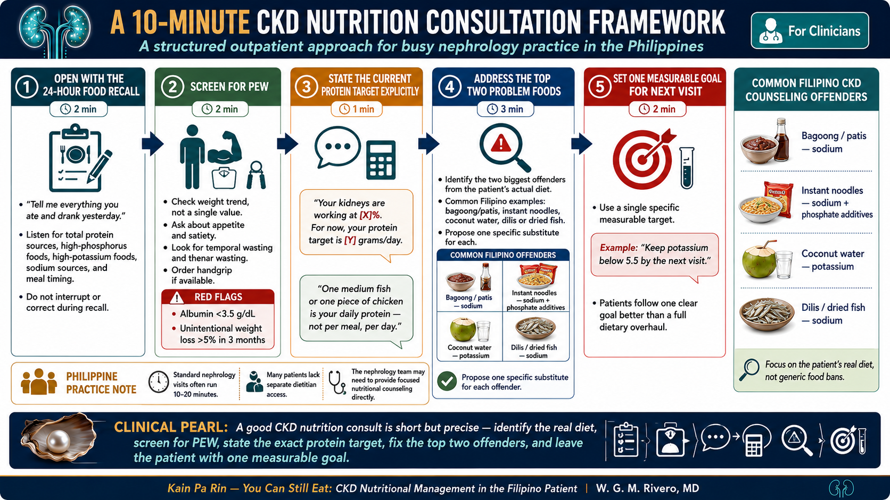
Key references: KDIGO 2024 CKD Clinical Practice Guidelines · KDOQI 2020 Nutrition Guideline for CKD · Fouque D et al. ISRNM consensus 2023 · Kalantar-Zadeh K, Fouque D. NEJM 2017;377:1765–1776 · Philippine Society of Nephrology Clinical Practice Guidelines (current edition)
Nutrition Assessment Tools
Validated tools for identifying malnutrition risk in CKD and dialysis patients: SNAQ (quick 3-question screen), MIS (10-item scored assessment), and SGA (clinician-administered global rating).
Reference: Kruizenga HM et al. Clin Nutr 2005;24(1):75–82. SNAQ validated for hospitalized patients; adapted for CKD screening.
Reference: Kalantar-Zadeh K et al. Am J Kidney Dis 2001;38(6):1251–1263. MIS validated for maintenance hemodialysis patients. Score range 0–30.
References: Detsky AS et al. JPEN J Parenter Enteral Nutr 1987;11(1):8–13. Steiber A et al. J Ren Nutr 2004;14(1):1–7 (CKD validation).